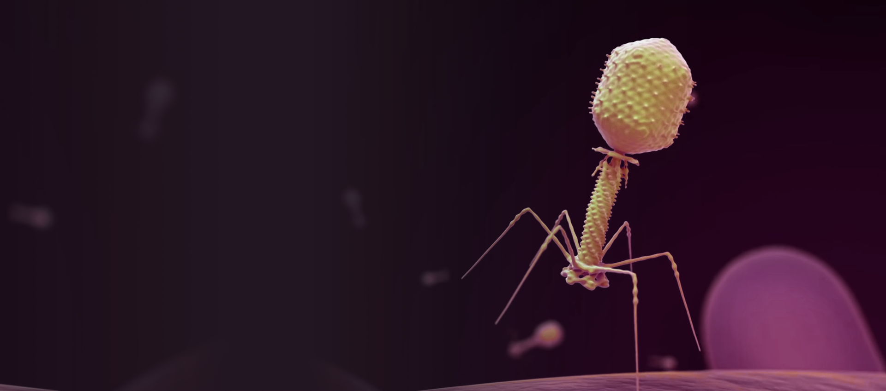

Projects
Animation
Graphic Design
Web Development

Fighting Infections With Phages
Cinema 4D
Adobe After Effects
ZBrush
Animation I created for the National Institute of Allergy and Infectious Diseases,
featured on CNN and the NIAID YouTube channel. I created the models, textures and animations.
Applications used were Cinema4D, ZBrush, Substance Painter and Adobe After Effects.

Tick Animation
Cinema 4D
ZBrush
Substance Painter
Modeled, rigged and animated a realistic deer tick for a microbiologist at the Rocky Mountain Laboratories.
The model was sculpted and textured using ZBrush and Substance Painter, then ported over to Cinema4D for the
animation and rigging process.